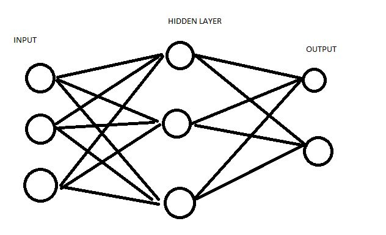
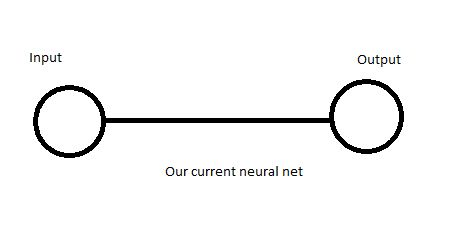
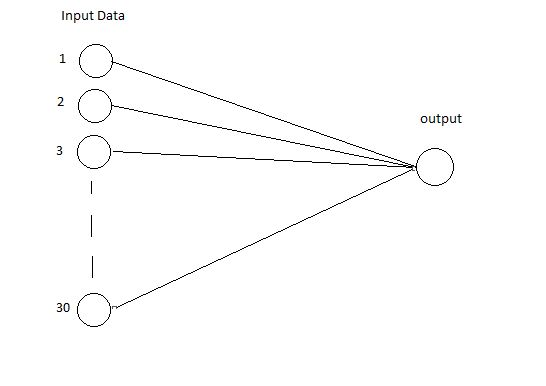
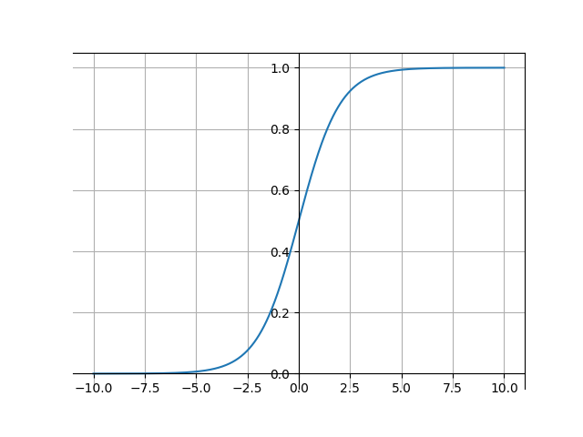
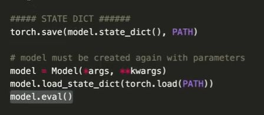
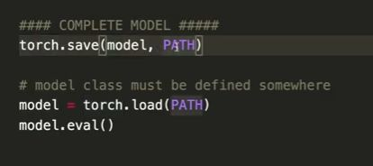

Pytorch
Table of Contents
\newpage
1. Introduction
In this course, we are going to learn about Pytorch. Please see installation instructions from web and come back.
1.1. Import necessary headers
import torch import numpy as np
1.2. Lets build some tensors
Building tensors is as simple as shown below. Notice the data-types too.
import torch import numpy as np def play_with_empty_and_random_tensors( ): tensors = [] #Empty ones tensors.append(torch.empty(5, dtype=torch.float32)) tensors.append(torch.empty(5,5, dtype=torch.int)) tensors.append(torch.empty(5,5,5, dtype=torch.int)) #Random ones tensors.append(torch.rand(5, dtype=torch.float32)) tensors.append(torch.rand(5,5, dtype=torch.float32)) tensors.append(torch.rand(5,5,5, dtype=torch.float32)) #Tensor with zeros and ones tensors.append(torch.zeros(5, dtype=torch.float32)) tensors.append(torch.ones(5, dtype=torch.float32)) tensors.append(torch.ones(5,5, dtype=torch.float32)) tensors.append(torch.ones(5,5,5, dtype=torch.float32)) #Tensords with arbirary value tensors.append(torch.tensor([1,2,3,4,5], dtype=torch.float32)) tensors.append(torch.tensor([[1,2],[3,4],[5,6]], dtype=torch.float32)) for tensor in tensors: print(tensor,tensor.size())
1.3. Slicing arrays
Either it is slicing numpy or torch arrays, same principles apply. The basic construct is [start:step:end,start:step:end.....] for all possible dimensions. If we want all data from a particular dimension just leave start, end blank and no need to specify step like "[:]".
1.3.1. Slicing numpy arrays
import torch import numpy as np def lets_slice_np_arrays( ): #Slicing numpy arrays my_arr = np.random.rand(5,5) print(my_arr) print("from 1 to all:") print(my_arr[1:]) #Print first column print(my_arr[:,0]) #Print first row print(my_arr[0,:]) #First to third row and second column print(my_arr[0:3,1])
1.3.2. Slicing torch arrays
import torch import numpy as np def lets_slice_torch_arrays( ): #Slicing torch arrays which is identical to numpy arrays. #See how in 3D the same logic applies my_arr = torch.rand(5,5,5) print(my_arr) #All from first index, and zero from each of 1st data so it will print a #5x5 matrix consisting of 1st rows of each of the 5x5 data in the my_arr print(my_arr[:,0]) #From 1st 5x5 data i.e 0th data, print all. It prints first 5x5 data. #Remember to think recursively print(my_arr[0,:]) #Take first 3 5x5 data, and get 2nd rows from each 5x5 data print(my_arr[0:3,1]) #Random print('testing my ') print(my_arr[2,:,4]) #print the value not as a tensor but as a value print(my_arr[1,2,3]) #This will print the value as a 1D tensor print(my_arr[1,2,3].item()) #This will print the value not as a 1D tensor but as a value
1.4. Reshape tensors
Reshaping tensors is simple process. As long as the number of items match, we may reshape any array of any size. Example we may reshape an array of dims \(5 \times 5 \times 5\) into \(5 \times 25\) or \(25 \times 5\) or \(1 \times 125\) or \(125 \times 1\). And one important fact while reshaping, if we put one of the dimensions as -1, pytorch automatically replaces it with the corrects size.
import torch import numpy as np def lets_reshape_tensors( ): my_arr = torch.rand(5,5,5) print(my_arr) print(my_arr.size()) my_arr_made_1D = my_arr.view(125) print(my_arr_made_1D) print(my_arr_made_1D.size()) my_arr_made_2D = my_arr.view(25,5) print(my_arr_made_2D) print(my_arr_made_2D.size()) my_arr_made_2D = my_arr.view(5,25) print(my_arr_made_2D) print(my_arr_made_2D.size()) #To let pytorch detect one of the reshaped sizes just put -1 there for example my_arr_made_2D = my_arr.view(5,-1) #The minus one will automatically be 25 print(my_arr_made_2D) print(my_arr_made_2D.size())
1.5. Convert of arrays to tensors and vice versa
Converting numpy arrays to torch and torch to numpy is as simple as shown below. Again notice that reference is given to each identifier so all of them point to same location in memory so that changing one will change the other.
import torch import numpy as np def lets_convert_numpy_tensor_vice_versa( ): #Convert from torch to numpy my_arr_torch = torch.rand(5,5,5) print(my_arr_torch) my_arr_np = my_arr_torch.numpy() print(my_arr_np) #Convert from numpy to torch my_arr_torch_from_np = torch.from_numpy(my_arr_np) print(my_arr_torch_from_np) #But be very carefull now that my_arr_torch_from_np, my_arr_np, my_arr_torch #are all pointing to the same memory location, and mofification of one will modify all of the others
1.6. Finding gradients
This is one of the most important and basic parts of torch. To understand gradients properly lets create some array and do some calculations as follows:
\(\textbf{x}\) = [2,3,4]
\[y = 2 \times (x+2)^2\]
\[z =\frac{1}{3} \sum_{i=1}^{3} \left( 2 \times (x_i+2)^2 \right)\]
And
\[\frac{dz}{dx_i} = \frac{1}{3} \times 4(x_i+2) =\frac{4}{3} \times (x_i+2) \]
Note that differentiating with respect to \(x_i\) will remove all other x's i.e while differentiating wrt \(x_1\) the sigma will vanish because differentiating the sum portion wrt \(x_2\) or \(x_3\) will give zero.
And putting the values of x we get:
\[\frac{dz}{dx} = [5.33,6.67,8]\]
And from the code below we get exactly the same.
In the code there are two things to take care about. One is to set the "required_grad " property of the tensor to true. Doing this will make pytorch to keep record of all the places with x has been used and hence enable gradient computation. And gradient computation is only for dtypes of floats.
ALSO NOTICE THAT ALL THE OPERATIONS ARE DONE ELEMENT WISE
And differentiation is only possible when z is a number and not a vector/tensor.
import torch import numpy as np def lets_find_gradients(): x = torch.from_numpy(np.array([2,3,4],dtype=np.float32)) #We could have also done x = torch.tensor([2,3,4],dype = tensor.float32) x.requires_grad = True z = 2*(x+2)**2 z = z.mean() print(z) z.backward() #This computes dz/dx and puts the values in x.grad print(x.grad) #to remove the requires_grad and prevent pytorch from # further tracking where x is used and creating gradient functions in our computational graph, we mays simply x.requires_grad = False # or we maydo x.requires_grad_(False). Any function in pytorch with trailing "_" modifies #the variable to which the function is attached to print(x)
There is another important thing to keep into account. Continuously calling the .backward() function adds on to the preexisting gradient. So before calling the .backward() function the second time we have to call the .grad.zero_() function as shown below:
import torch import numpy as np def be_aware_of_gradient_accumulation(): x = torch.tensor([1,2,3],dtype = torch.float32,requires_grad=True) for i in range(2): y = (x**2).sum() #need a scalar y.backward() print(x.grad)
Doing above will add to the x.grad twice making the result [4,8,12] instead of [2,4,6]. To achieve such result we have to clear the x.grad as follows:
import torch import numpy as np def be_aware_of_gradient_accumulation(): x = torch.tensor([1,2,3],dtype = torch.float32,requires_grad=True) for i in range(2): y = (x**2).sum() #need a scalar y.backward() print(x.grad) x.grad.zero_() #zero the gradient
Doing above will clear the grad.
2. Backpropagation and Gradient Descent
Now we learn the heart and soul of neural nets: Gradient Descent algorithm. To understand gradient descent, lets solve a simple linear regression problem numerically. We could have solved the following problem by simple linear regression model but just to illustrate gradient descent which is a numerical technique we solve the problem using numerical approach.
Let \(\textbf{X}\) = [1,2,3,4]
Let \(\textbf{Y}\) = [3,5,7,9]
Now \(\textbf{X}\) is the input and \(\textbf{Y}\) is the output, we use a simple linear model as :
\[y = wx +b\]
where w be the weight and b be the bias, which are just terms used in the world of neural net. You might realize that is simply \(\textbf{a}\) and \(\textbf{b}\) which we used in math classes.
Even though we can easily compute w and b even by using calculator which come to be \(2\) and \(1\), and the equation is clearly
\[y = 2x+1\], we will numerically find w and b after number of iterations.
To do so, we have to find the error function which we will minimize:
\[E = \frac{1}{n} \sum_{i=1}^{n}(y-y_i)^2\]
In our case n is 4 so:
\[E = \frac{1}{4} \sum_{i=1}^{4}(wx_i+b-y_i)^2\]
And:
\[\frac{\partial E}{\partial w} = \frac{1}{4} \sum_{i=1}^{4}2 \times (wx_i+b-y_i) \times x_i\]
Above expression looks neater in vector form:
\[\frac{dE}{dw} = \frac{1}{4} \times 2\overrightarrow{x}.(\overrightarrow{y_{pred}} - \overrightarrow{y})\]
where \(\overrightarrow{x} = \begin{pmatrix}
1 \\
2\\
3\\
4\\
\end{pmatrix}\) ,\(\overrightarrow{y} = \begin{pmatrix}
3\\
5\\
7\\
9\\
\end{pmatrix}\), and likewise \(y_{pred}\) is the vector of predicted values for the \(w\) and \(b\).
Likewise:
\[\frac{\partial E}{\partial b} = \frac{1}{4} \sum_{i=1}^{4}2 \times (wx_i+b-y_i)\]
In vector notation:
\[\frac{\partial E}{\partial b} = \frac{2}{4} \times (\overrightarrow{1}.(\overrightarrow{y_{pred}}-\overrightarrow{y}))\]
where other symbols are as given before but
Now lets understand something clearly in above computation we can clearly see that \(E\) i.e our error function is a function of w and b i.e
\[E = f(w,b)\]
and to minimize E is to move in opposite direction to the gradient of E as the direction of gradient points to the max rate of change at that point i.e it points to maximize E so given a pair \(w,b\), we need to move towards
where
\(\nabla E = \begin{pmatrix} \frac{\partial E}{\partial w}\\ \frac{\partial E}{\partial b}\\ \end{pmatrix}\) So at each step we have to modify w, b to reach the minimum E. Lets solve it in python as shown below first by only using numpy i.e not using torch then by using torch as well.
Not using torch
import torch import numpy as np def lets_gradient_descent(): X = np.array([1,2,3,4]) Y = np.array([3,5,7,9]) w = random.random() b = random.random() learning_rate = 0.1 n_iters = 100 def forward(x): return w*x+b def predicted(X): return forward(X) def loss(X,Y): return ((predicted(X)-Y)**2).mean() def grad_w(X,Y): return (2/4)*np.dot(X,(predicted(X)-Y)) def grad_b(X,Y): return (2/4)*(predicted(X)-Y).sum() print(f"Before training f(5) = {forward(5)}") for i in range(n_iters): w -= learning_rate*grad_w(X,Y) b -= learning_rate*grad_b(X,Y) error = loss(X,Y) print(f"w:{w:.3f} and b:{b:.3f} and loss:{error:.3f}") print(f"After training iterations f(5) = {forward(5):.3f}") lets_gradient_descent()
Before training f(5) = 4.523667489008339
w:2.879 and b:0.097 and loss:2.644
And after more computations….
w:2.008 and b:0.977 and loss:0.000
After training iterations f(5) = 11.016
Now using torch, we see that we no longer need to compute gradient manually. torch does that for us, and remember to convert data to torch.tensor. Another important thing is notice that the updating of w and b are done inside the torch.no_grad , this is because torch keep computational graph of all operations involved in tensors with requires_grad = True, so to avoid self referential problem we do so. By self referential what I mean is say in \(x+=1\), programmatically it has no problem we understand that x = x+1, but mathematically now x has been self referenced so the gradients of x will be wrt x so the updating calculation have to be done inside torch.no_grad.
import torch import numpy as np def lets_gradient_descent_with_torch(): X = torch.tensor([1,2,3,4],dtype=torch.float32) Y = torch.tensor([3,5,7,9],dtype = torch.float32) w = torch.tensor(random.random(),dtype =torch.float32, requires_grad=True) b = torch.tensor(random.random(),dtype=torch.float32,requires_grad=True) learning_rate = 0.1 n_iters = 100 def forward(x): return w*x+b def predicted(X): return forward(X) def loss(X,Y): return ((predicted(X)-Y)**2).mean() print(f"Before training f(5) = {forward(5)}") for i in range(n_iters): error = loss(X,Y) error.backward() with torch.no_grad(): w -= learning_rate*w.grad b -= learning_rate*b.grad print(f"w:{w:.3f} and b:{b:.3f} and loss:{error:.3f}") w.grad.zero_() b.grad.zero_() print(f"After training iterations f(5) = {forward(5):.3f}") lets_gradient_descent_with_torch()
Before training f(5) = 3.8705523014068604
w:2.986 and b:1.098 and loss:17.338
And after more computations…..
w:2.004 and b:0.989 and loss:0.000
After training iterations f(5) = 11.007
Now there was something fishy when I ran both code with w and b set to 0. The answers were different even though they should have been same. Then I found the problem. The difference in the outputs was because while computing gradients wrt w and b, I used updated w to computed gradient wrt b. But I should have first computed the gradients wrt w, and b based on their current values. So after I made the following correction, the outputs from both the code using and without using torch were same, and I was happy.
import torch import numpy as np def lets_gradient_descent_without_torch(): X = np.array([1,2,3,4]) Y = np.array([3,5,7,9]) w = 0 b = 0 learning_rate = 0.1 n_iters = 100 def forward(x): return w*x+b def predicted(X): return forward(X) def loss(X,Y): return ((predicted(X)-Y)**2).mean() def grad_w(X,Y): return (2/4.0)*np.dot(X,(predicted(X)-Y)) def grad_b(X,Y): return (2/4.0)*(predicted(X)-Y).sum() print(f"Before training f(5) = {forward(5)}") for i in range(n_iters): dw = grad_w(X,Y) #Here and db =grad_b(X,Y) # Here I made the changes w -= learning_rate*dw b -= learning_rate*db error = loss(X,Y) print(f"w:{w:.3f} and b:{b:.3f} and loss:{error:.3f} grad_w = {dw} grad_b = {db}") print(f"After training iterations f(5) = {forward(5):.3f}")
The code with torch was exactly the same with w and b set to 0 instead of random values.
3. Training Pipeline
Now we do everything from defining the loss function to training the model completely in pytorch. To do so we follow the following steps:
3.1. Prepare Data
First we provide input and output data:
X = torch.tensor([[1],[2],[3],[4]],dtype=torch.float32)
Y = torch.tensor([[3],[5],[7],[9]],dtype=torch.float32)
Now just the look of it, you should be able to figure out that we are now dealing with vectors. X are Y are \(4 \times 1\) vectors now. Previously we had \(1 \times 4\), which we not normally used. We deal with vectors and matrices in deep learning.X need not be vector, it an be a huge matrix. As it is just a list of inputs. Each input may be as long as it wants. Sometimes the input itself can be a matrix like images in which case the input is converted to vector not X which is itself a list of inputs.
In the data preparation there are a lot of other things that have to be done like normalizing the data, splitting the data that we have into train and test set, etc. The example that we are doing is fairly simple now but the next one will involve everything.
After that we figure out the size of input and output NOT input and output "DATA". We already took care of input and output data as shown above. Now what sized input and prediction are expected are to be specified. In our case both are one and one i.e we want to know what output the system produces when we provide it "5" as input data,and we are expecting 11 as done previously. But things won't be always as simple, later we will see that inputs will themselves be an long array of numbers for example while training with images, inputs will be images i.e a huge list of numbers and output will also be an vector if numbers, while trying to find out whether a person has cancer or not, the input will be a list of "features" i.e input criteria for example age, does he/she consume cigarette, did the parents had cancer, etc. In this case the input will look like:
X = torch.tensor([[25,1,0],[70,0,1],[50,1,1],[61,1,1]],dtype=torch.float32)
In above example in the first data 25 is the age, 1 denotes that the person consumes cigarette, and 0 denotes that there is no heredity of cancer. And a sample output for the above data might be like:
Y = torch.tensor([[1],[0],[0]],dtype=torch.float32)
The output says that the first person i.e has cancer i.e 1 output, second and third do not have cancer. So we now have to train our model for such data where the input size is 3 and output is 1. Again note that the factors like age, consumes cigarette, etc are generally known as features.
3.2. Design the model
After preparing data we prepare a model. First we do the same as we did previously, decide on the input data and the expected output data. This is exactly the same as done above, but the dimensions of arrays are different as shown. But first we have to import the neural network module as:
import torch import torch.nn as nn
Using the nn module we can now directly used the pre-existing loss functions as:
3.2.1. Use the model provided by torch
input_size = 1 #This is generatlly the features of the input data output_size = 1 model = nn.Linear(input_size,output_size)
Because we created a model using torch, we need not manually create weights and biases but can generate them as:
optimizer = torch.optim.SGD(model.parameters(),lr=learning_rate)
By using model.parameters() above pytorch automatically generates weights and biases based on input_size, output_size
and number of layers. In above example we have used nn.Linear model which is automatically a single layered model
and by providing the size of one and one, torch now easily finds out that w, and b are of size 1 and 1, it stores them as:
w = [ [<some_random_value>] ]
What the size tells us is that there are no hidden layers, and the size of output and input is both 1.
What is unique about above representation is that w is an big list of 2D matrices for each layer. So basically it becomes
3D like:
w = [ [[1,2,5],[3,4,7],[5,6,6]],[[7,8,9],[9,10,11]] ]
Above weight matrix represents a model with 1 hidden layer between input and output. The layer has 3 nodes. We can also deduce that the input has 3 nodes itself and output is 2 noded. as shown below

the size of biases are the same as next layer.
For above case bias would look like:
b = [ [1,2,3],[1,2] ]
Our neural net i.e the one we are solving looks like this:

We are now dealing with the world's simple neural net with one input and one output. Note that most people are confused by the fact that they think X is the input. X is not a single input. It is a LIST OF INPUTS. Note this and you won't be confused. The neural net contains one input and one ouput, not a list of inputs and outputs. The confusion is created because in most cases the example for a neural net is given in terms a large input set mostly image data which contains a huge list of numbers and people confuse the huge list of numbers a a list of inputs like X. But remember THE IMAGE IS A SINGLE INPUT. So, I hope there is no longer confusion that a neural net just shows one input and one output. And the input and output might contain arbitrary number of data. For input data the number of numbers are features. Also note that error is accumulated from each of the input data and the over all process of choosing weights and biases has the only goal of minimizing the total error, not individual error but total error. In 2D it is like the line of best fit. In multi dimension think the weights and biases as some multidimensional form of line like plane, hyper plane or what not, which almost fits the space of all the input and output data i.e if you could plot the multidimensional input and the output, the adjusted weights and biases do exactly what a line does for a list of 1D input and output i.e they form a hyper surface closer to the input and output data.
Now, for feed forward, we also don't have to write the code manually, instead we may simply use out model as:
X_test = torch.tensor([5],dtype=torch.float32) print(f"Before training f(5) = {model(X_test).item():.3f}")
we use model(<input_data>) to generate the output. i.e is the equivalent of feed forward. But notice
that the <input_data> is a tensor, and in above code we could used .item() as the output was single valued
And to see the weights and biases any time, we may ask for them from the model as:
[w,b] = model.parameters()
3.3. Building a custom model
In the previous section we used the nn.Linear() model provide by pytorch. Since out example was quite simple, this
did the job, but in real life case we have to build a custom model deriving from nn.Module as shown below:
class linear_regression(nn.Module): def __init__(self,input_size,output_size) -> None: super().__init__() #define layers here self.linear_regression = nn.Linear(input_size,output_size) def forward(self,x): return self.linear_regression(x)
Below we have coded first without using a custom model, then finally with a custom model
Also note that the class that we custom built is callable i.e nn.Module must have __call__ method, which calls the
forward method. So we also need to defined the forward method. And here in the forward method we again did the same
thing: used nn.Linear class which is again a callable class.
now putting above code altogether:
3.4. Decide on the loss function
loss = nn.MSELoss()
Notice that it is exactly the loss function that we used previously i.e mean squared error loss function but
note that nn.MSELoss is a class with __call__ method implemented inside it so the class is callable.
The class expects the tensors of both the expected output and real output as inputs as
we have done previously. i.e to call the loss function defined as __call__ of the nn.MSELoss class
we need to just loss(Yp,Y) where Yp is predicted, and Y is just
the real outputs.
3.5. Decide on optimizer
Now instead of manually updating the gradients we use torch optimizer as follows. Notice that even though we already know that we need not manually declare weights and biases, but for now lets first do things manually then we will do everything using torch:
optimizer = torch.optim.SGD([w,b],lr=learning_rate)
Now the part that we did manually of gradient descent is done by optimizer now. SGD stands for Stochastic Gradient Descent. Stochastic just means probabilistic i.e well modeled by random probability distribution.
Now see that in the training step we used the loss function, the only difference from previous case is that
the loss function take Y and predicted Y, instead of out defined loss function which took X and Y. And
then in the step where is updated our weights and biases there is simply optimzer.step() we does the
same thing. And finally setting the grad to zero has to be done as done previously but only in a different way using
optimizer.
for i in range(n_iters): error = loss(Y,predicted(X)) error.backward() optimizer.step() optimizer.zero_grad() print(f"w:{w:.3f} and b:{b:.3f} and loss:{error:.3f} grad_w = {w.grad} grad_b = {b.grad}")
Now with everything in place lets check our code:
import torch import torch.nn as nn def do_everything_in_torch(): X = torch.tensor([[1],[2],[3],[4]],dtype=torch.float32) Y = torch.tensor([[3],[5],[7],[9]],dtype=torch.float32) learning_rate = 0.1 n_iters = 100 w = torch.tensor(0,dtype =torch.float32, requires_grad=True) b = torch.tensor(0,dtype=torch.float32,requires_grad=True) def forward(x): return w*x+b def predicted(X): return forward(X) loss = nn.MSELoss() #This class is callable optimizer = torch.optim.SGD([w,b],lr=learning_rate) print(f"Before training f(5) = {forward(5)}") for i in range(n_iters): error = loss(Y,predicted(X)) error.backward() optimizer.step() optimizer.zero_grad() print(f"w:{w:.3f} and b:{b:.3f} and loss:{error:.3f} grad_w = {w.grad} grad_b = {b.grad}") print(f"After training iterations f(5) = {forward(5):.3f}")
Before training f(5) = 0.0
w:3.500 and b:1.200 and loss:41.000 grad_w = 0.0 grad_b = 0.0
After many other steps…
w:2.005 and b:0.986 and loss:0.000 grad_w = 0.0 grad_b = 0.0
After training iterations f(5) = 11.010
As you can see we removed the loss function, the gradient updating part with the ones provided by torch. And the outputs
are fine but what you will realize is grad_w and grad_b are zeros all the time. It looks like the loss function/class
is doing things in its own way inside so that computing loss and doing error.backward() did not put the
gradients in w.grad and b.grad.
Now we further remove the manual declaration of weights and biases, and also remove the manual forward function and instead just used the model provided by torch as shown:
First we remove the manual declaration of weight and biases, as the pytorch model knows how to generate weights and biases based on the number of inputs and outputs expected, the model type and number of layers in the model. Pytorch automatically generates and initializes the weights and biases to some random value.
Now we first create a model as shown
3.6. Pipeline and final code
In summary we do
- Prepare Data
- Define the model
- Choose loss,function and optimizer
- Train the model
- Forward Pass
- Backward Pass
- Update weights
Now combining everything we learned so far:
import torch import torch.nn as nn def do_completely_everything_in_torch(): X = torch.tensor([[1],[2],[3],[4]],dtype=torch.float32) Y = torch.tensor([[3],[5],[7],[9]],dtype=torch.float32) learning_rate = 0.1 n_iters = 100 X_test = torch.tensor([5],dtype=torch.float32) input_size = 1 output_size = 1 model = nn.Linear(input_size,output_size) loss = nn.MSELoss() #This class is callable optimizer = torch.optim.SGD(model.parameters(),lr=learning_rate) print(f"Before training f(5) = {model(X_test).item():.3f}") for i in range(n_iters): Y_pred = model(X) #This is forward pass error = loss(Y,Y_pred) #Error computation error.backward() # This is back propagation optimizer.step() # This is updating of wights and biases optimizer.zero_grad() # setting the gradients to zero as they will accumulate if we don't do so [w,b] = model.parameters() print(w,b) print(f"w:{w.item():.3f} and b:{b.item():.3f} and loss:{error:.3f} grad_w = {w.grad.item():.3f} grad_b = {b.grad.item():.3f}") print(f"After training iterations f(5) = {model(X_test).item():.3f}")
Before training f(5) = 0.102
Parameter containing:
tensor([[3.2461] ], requires_grad=True) Parameter containing:
tensor([1.7379], requires_grad=True)
w:3.246 and b:1.738 and loss:37.377 grad_w = 0.000 grad_b = 0.000
After more iterations:…
Parameter containing:
tensor([[1.9953] ], requires_grad=True) Parameter containing:
tensor([1.0139], requires_grad=True)
w:1.995 and b:1.014 and loss:0.000 grad_w = 0.000 grad_b = 0.000
After training iterations f(5) = 10.990
3.7. Code with custom model
import torch import torch.nn as nn def do_completely_everything_in_torch(): X = torch.tensor([[1],[2],[3],[4]],dtype=torch.float32) Y = torch.tensor([[3],[5],[7],[9]],dtype=torch.float32) learning_rate = 0.1 n_iters = 100 X_test = torch.tensor([5],dtype=torch.float32) input_size = 1 output_size = 1 class linear_regression(nn.Module): def __init__(self,input_size,output_size) -> None: super().__init__() #define layers here self.linear_regression = nn.Linear(input_size,output_size) def forward(self,x): return self.linear_regression(x) model = linear_regression(input_size,output_size) loss = nn.MSELoss() #This class is callable optimizer = torch.optim.SGD(model.parameters(),lr=learning_rate) print(f"Before training f(5) = {model(X_test).item():.3f}") for i in range(n_iters): error = loss(Y,model(X)) error.backward() optimizer.step() optimizer.zero_grad() [w,b] = model.parameters() print(w,b) print(f"w:{w.item():.3f} and b:{b.item():.3f} and loss:{error:.3f} grad_w = {w.grad.item():.3f} grad_b = {b.grad.item():.3f}") print(f"After training iterations f(5) = {model(X_test).item():.3f}")
4. Logistic Regression
A regression where the outputs are either 0 or 1 i.e "logistic" as in boolean logic, is logistic regression. Now we will now use the data of cancer patients to predict whether a person with certain condition or features is likely to have cancer. To do so we will be using sklearn datasets, we will have to normalize the data. So lets get started.
First lets import necessary headers
import torch import numpy as np import torch.nn as nn from sklearn import datasets from sklearn.preprocessing import StandardScaler from sklearn.model_selection import train_test_split
Datasets contain the necessary data which we shall be using. StandardScaler normalizes the data i.e converts the data to another form which has a mean of 0 and standard deviation of 1. It does this to each feature independent of other features.
train_test_split will be used for splitting the data into training and testing sets. This is always the convention i.e we first train out model with certain portion of data, and see how effect it is in predicting the rest of the data.
Now we start the pipeline:
4.1. Prepare the data
Lets load the breast cancer data set as follows:
breast_cancer_data = datasets.load_breast_cancer()
Above data set gives a dictionary of data containing the input data, the target data which is the list of 0 and 1s which signify no cancer and cancer. To see how the data inside looks like lets print the data and target and see:
import torch import numpy as np import torch.nn as nn from sklearn import datasets from sklearn.preprocessing import StandardScaler from sklearn.model_selection import train_test_split def logis_regression(): breast_cancer_data = datasets.load_breast_cancer() data = breast_cancer_data.data target = breast_cancer_data.target print(f"Shape of data:{data.shape}") print(data) print(f"Shape of target:{target.shape}") print(target) logis_regression()
Shape of data:(569, 30) [[1.799e+01 1.038e+01 1.228e+02 ... 2.654e-01 4.601e-01 1.189e-01] [2.057e+01 1.777e+01 1.329e+02 ... 1.860e-01 2.750e-01 8.902e-02] [1.969e+01 2.125e+01 1.300e+02 ... 2.430e-01 3.613e-01 8.758e-02] ... [1.660e+01 2.808e+01 1.083e+02 ... 1.418e-01 2.218e-01 7.820e-02] [2.060e+01 2.933e+01 1.401e+02 ... 2.650e-01 4.087e-01 1.240e-01] [7.760e+00 2.454e+01 4.792e+01 ... 0.000e+00 2.871e-01 7.039e-02]] Shape of target:(569,) [0 0 0 0 0 0 0 0 0 0 0 0 0 0 0 0 0 0 0 1 1 1 0 0 0 0 0 0 0 0 0 0 0 0 0 0 0 1 0 0 0 0 0 0 0 0 1 0 1 1 1 1 1 0 0 1 0 0 1 1 1 1 0 1 0 0 1 1 1 1 0 1 0 0 1 0 1 0 0 1 1 1 0 0 1 0 0 0 1 1 1 0 1 1 0 0 1 1 1 0 0 1 1 1 1 0 1 1 0 1 1 1 1 1 1 1 1 0 0 0 1 0 0 1 1 1 0 0 1 0 1 0 0 1 0 0 1 1 0 1 1 0 1 1 1 1 0 1 1 1 1 1 1 1 1 1 0 1 1 1 1 0 0 1 0 1 1 0 0 1 1 0 0 1 1 1 1 0 1 1 0 0 0 1 0 1 0 1 1 1 0 1 1 0 0 1 0 0 0 0 1 0 0 0 1 0 1 0 1 1 0 1 0 0 0 0 1 1 0 0 1 1 1 0 1 1 1 1 1 0 0 1 1 0 1 1 0 0 1 0 1 1 1 1 0 1 1 1 1 1 0 1 0 0 0 0 0 0 0 0 0 0 0 0 0 0 1 1 1 1 1 1 0 1 0 1 1 0 1 1 0 1 0 0 1 1 1 1 1 1 1 1 1 1 1 1 1 0 1 1 0 1 0 1 1 1 1 1 1 1 1 1 1 1 1 1 1 0 1 1 1 0 1 0 1 1 1 1 0 0 0 1 1 1 1 0 1 0 1 0 1 1 1 0 1 1 1 1 1 1 1 0 0 0 1 1 1 1 1 1 1 1 1 1 1 0 0 1 0 0 0 1 0 0 1 1 1 1 1 0 1 1 1 1 1 0 1 1 1 0 1 1 0 0 1 1 1 1 1 1 0 1 1 1 1 1 1 1 0 1 1 1 1 1 0 1 1 0 1 1 1 1 1 1 1 1 1 1 1 1 0 1 0 0 1 0 1 1 1 1 1 0 1 1 0 1 0 1 1 0 1 0 1 1 1 1 1 1 1 1 0 0 1 1 1 1 1 1 0 1 1 1 1 1 1 1 1 1 1 0 1 1 1 1 1 1 1 0 1 0 1 1 0 1 1 1 1 1 0 0 1 0 1 0 1 1 1 1 1 0 1 1 0 1 0 1 0 0 1 1 1 0 1 1 1 1 1 1 1 1 1 1 1 0 1 0 0 1 1 1 1 1 1 1 1 1 1 1 1 1 1 1 1 1 1 1 1 1 1 1 1 1 0 0 0 0 0 0 1]
So we can clearly see that there are 569 data each with 30 features, so out input size is 30. Likewise the output is a binary value of 0 or 1 so the output size is naturally 1 and the neural net if no hidden layers are there will look like:

And the size of bias will be 1 and and of weights will be \(1 \times 30\). i.e
\begin{equation*} \label{} w = \begin{bmatrix} w_{11} & w_{12} & ... & w_{1-30} \end{bmatrix} \end{equation*}Input is obviously:
\begin{equation*} \label{} input = \begin{pmatrix} f1\\ f2\\ f3\\ f4\\ .\\ .\\ .\\ f30\\ \end{pmatrix} \end{equation*}bias is simply: \[b = [b_1]\]
Lets further prepare the data, lets put the data inside X and target i.e output inside Y as
X = breast_cancer_data.data Y = breast_cancer_data.target
Then lets get the number of samples and features as:
n_samples,n_features = X.shape
Then now lets split the data into test and train set:
X_train,X_test,Y_train,Y_test = train_test_split(X,Y,test_size=0.2,random_state=1234)
Lets see inside the train and test data:
import torch import numpy as np import torch.nn as nn from sklearn import datasets from sklearn.preprocessing import StandardScaler from sklearn.model_selection import train_test_split def logis_regression(): breast_cancer_data = datasets.load_breast_cancer() X = breast_cancer_data.data Y = breast_cancer_data.target n_samples,n_features = X.shape X_train,X_test,Y_train,Y_test = train_test_split(X,Y,test_size=0.2,random_state=42) print(X_train.shape,X_test.shape,Y_train.shape,Y_test.shape) print(f"X-Train:{X_train}") print(f"X-Test:{X_test}") print(f"Y-Train:{Y_train}") print(f"Y-Test:{Y_test}") logis_regression()
(455, 30) (114, 30) (455,) (114,) X-Train:[[9.029e+00 1.733e+01 5.879e+01 ... 1.750e-01 4.228e-01 1.175e-01] [2.109e+01 2.657e+01 1.427e+02 ... 2.903e-01 4.098e-01 1.284e-01] [9.173e+00 1.386e+01 5.920e+01 ... 5.087e-02 3.282e-01 8.490e-02] ... [1.429e+01 1.682e+01 9.030e+01 ... 3.333e-02 2.458e-01 6.120e-02] [1.398e+01 1.962e+01 9.112e+01 ... 1.827e-01 3.179e-01 1.055e-01] [1.218e+01 2.052e+01 7.722e+01 ... 7.431e-02 2.694e-01 6.878e-02]] X-Test:[[1.247e+01 1.860e+01 8.109e+01 ... 1.015e-01 3.014e-01 8.750e-02] [1.894e+01 2.131e+01 1.236e+02 ... 1.789e-01 2.551e-01 6.589e-02] [1.546e+01 1.948e+01 1.017e+02 ... 1.514e-01 2.837e-01 8.019e-02] ... [1.152e+01 1.493e+01 7.387e+01 ... 9.608e-02 2.664e-01 7.809e-02] [1.422e+01 2.785e+01 9.255e+01 ... 8.219e-02 1.890e-01 7.796e-02] [2.073e+01 3.112e+01 1.357e+02 ... 1.659e-01 2.868e-01 8.218e-02]] Y-Train:[1 0 1 1 1 0 1 1 1 0 1 0 0 1 1 0 0 0 1 1 1 0 1 1 1 0 1 0 1 1 0 1 0 0 0 1 0 1 1 1 1 0 0 1 1 1 1 1 1 1 0 1 1 1 1 0 1 1 1 1 1 1 0 1 1 1 1 1 1 0 0 0 1 1 0 1 0 1 1 1 1 0 1 1 0 1 1 1 0 1 0 0 1 1 1 0 1 1 1 1 0 1 1 1 1 1 0 1 0 0 1 1 0 1 1 1 1 1 1 1 0 0 0 1 1 0 1 1 0 1 0 1 0 1 0 1 1 0 1 1 1 0 1 0 1 0 1 0 1 1 0 1 1 1 1 0 1 1 1 0 1 1 0 1 1 0 1 1 1 1 1 1 1 0 1 1 1 0 1 0 1 1 1 0 1 0 0 1 1 0 1 0 0 0 1 1 1 0 1 1 0 1 0 1 1 1 0 1 0 1 1 0 0 1 1 0 1 0 0 1 0 0 1 1 0 0 0 1 1 1 1 0 1 0 0 0 0 1 1 1 1 1 1 1 1 0 0 1 1 0 1 1 1 1 1 0 1 1 0 0 1 0 1 0 1 1 1 1 1 1 0 1 1 0 1 1 1 1 1 1 0 1 1 0 1 0 0 0 1 0 1 1 0 0 0 1 1 1 1 1 1 1 0 1 1 1 0 1 1 0 0 1 0 1 0 0 1 1 0 1 0 0 1 0 0 1 1 0 1 0 1 1 0 1 1 0 0 0 1 1 1 0 0 1 0 0 1 1 1 0 1 0 0 0 0 1 1 0 1 1 0 0 0 0 0 0 1 1 1 1 1 1 1 0 0 0 0 1 1 1 1 0 1 0 1 1 1 1 1 0 0 0 1 1 0 1 1 0 0 0 0 1 1 0 0 1 1 1 0 0 0 1 1 0 1 1 1 1 0 1 1 1 1 1 1 1 1 1 0 1 1 1 1 1 1 0 1 1 0 1 1 0 0 0 1 0 0 1 0 1 1 1 1 0 1] Y-Test:[1 0 0 1 1 0 0 0 1 1 1 0 1 0 1 0 1 1 1 0 0 1 0 1 1 1 1 1 1 0 1 1 1 1 1 1 0 1 0 1 1 0 1 1 1 1 1 1 1 1 0 0 1 1 1 1 1 0 0 1 1 0 0 1 1 1 0 0 1 1 0 0 1 0 1 1 1 0 1 1 0 1 0 0 0 0 0 0 1 1 1 1 1 1 1 1 0 0 1 0 0 1 0 0 1 1 1 0 1 1 0 1 1 0]
Now most of the above details are self explanatory like the 0.2 i.e the test data is 0.2 times the total i.e 114 out of 569. But the only thing that need explanation is random_state. This is simply the seed need for random number generation. If we donot provide it, each time we run the data the sample will be different. Just for consistency of testing we are now making it fixed so that we always get the same train and test data.
Now lets normalize the data and see how the looks like:
import torch import numpy as np import torch.nn as nn from sklearn import datasets from sklearn.preprocessing import StandardScaler from sklearn.model_selection import train_test_split def logis_regression(): breast_cancer_data = datasets.load_breast_cancer() X = breast_cancer_data.data Y = breast_cancer_data.target n_samples,n_features = X.shape X_train,X_test,Y_train,Y_test = train_test_split(X,Y,test_size=0.2,random_state=42) sc = StandardScaler() X_train = sc.fit_transform(X_train) X_test = sc.transform(X_test) print(X_train.shape,X_test.shape) print(f"X_train:{X_train}") print(f"X_test:{X_test}") logis_regression()
(455, 30) (114, 30) X_train:[[-1.44075296 -0.43531947 -1.36208497 ... 0.9320124 2.09724217 1.88645014] [ 1.97409619 1.73302577 2.09167167 ... 2.6989469 1.89116053 2.49783848] [-1.39998202 -1.24962228 -1.34520926 ... -0.97023893 0.59760192 0.0578942 ] ... [ 0.04880192 -0.55500086 -0.06512547 ... -1.23903365 -0.70863864 -1.27145475] [-0.03896885 0.10207345 -0.03137406 ... 1.05001236 0.43432185 1.21336207] [-0.54860557 0.31327591 -0.60350155 ... -0.61102866 -0.3345212 -0.84628745]] X_test:[[-0.46649743 -0.13728933 -0.44421138 ... -0.19435087 0.17275669 0.20372995] [ 1.36536344 0.49866473 1.30551088 ... 0.99177862 -0.561211 -1.00838949] [ 0.38006578 0.06921974 0.40410139 ... 0.57035018 -0.10783139 -0.20629287] ... [-0.73547237 -0.99852603 -0.74138839 ... -0.27741059 -0.3820785 -0.32408328] [ 0.02898271 2.0334026 0.0274851 ... -0.49027026 -1.60905688 -0.33137507] [ 1.87216885 2.80077153 1.80354992 ... 0.7925579 -0.05868885 -0.09467243]]
4.1.1. Understanding Fit Transform
What is going on? What is the fit_transform doing? What is the transform doing? Lets try to answer.
fit_transform is computing the mean and sd of individual features in all data, and normalizing them. fit_transform is combination of fit() and transform() functions. fit() function computes the mean and sd, transform() then applies it to the data. fit_transform() does both of them at once. fit_transform only remembers the mean and standard deviation of last computation so while doing inverse_transfrom() which will get the original data remember that the last used fit_transforms' data's mean and sd will be used to inverse_transform the data. Lets understand the basics first:
import torch import numpy as np import torch.nn as nn from sklearn import datasets from sklearn.preprocessing import StandardScaler from sklearn.model_selection import train_test_split def logis_regression(): breast_cancer_data = datasets.load_breast_cancer() X = breast_cancer_data.data Y = breast_cancer_data.target n_samples,n_features = X.shape X_train,X_test,Y_train,Y_test = train_test_split(X,Y,test_size=0.2,random_state=42) sc = StandardScaler() print("Before normalizing:") first_features = X_train[:,0] print(f"first 10 values of first feature:{first_features[:10]} mean of all first feature:{first_features.mean()} sd:{np.std(first_features)}") X_train = sc.fit_transform(X_train) X_test = sc.transform(X_test) print("After normalizing:") first_features = X_train[:,0] print(f"first 10 values of first feature:{first_features[:10]} mean of all first feature:{first_features.mean()} sd:{np.std(first_features)}") logis_regression()
Before normalizing: first 10 values of first feature:[ 9.029 21.09 9.173 10.65 10.17 14.54 14.41 11.43 12.25 19.89 ]
mean of all first feature:14.117635164835166 sd:3.53192760912877
After normalizing: first 10 values of first feature:[-1.44075296 1.97409619 -1.39998202 -0.98179678 -1.11769991 0.11958479 0.0827777 -0.7609542 -0.52878637 1.63433838] mean of all first feature:-1.811493568091684e-15 sd:1.0000000000000004
Now try to find out where does the first data i.e -1.4404 come from. It comes like this:
\[\frac{9.029-14.117}{3.5319} =-1.4407 \]
Now notice very carefully that there are a total of 30 features, and each one of them is independently normalized
with respect to each features' mean and sd, not with respect to complete data's mean and sd. So, now we understand what
fit_tranform does, but what about transform only. Lets find out.
import torch import numpy as np import torch.nn as nn from sklearn import datasets from sklearn.preprocessing import StandardScaler from sklearn.model_selection import train_test_split def logis_regression(): breast_cancer_data = datasets.load_breast_cancer() X = breast_cancer_data.data Y = breast_cancer_data.target n_samples,n_features = X.shape X_train,X_test,Y_train,Y_test = train_test_split(X,Y,test_size=0.2,random_state=42) sc = StandardScaler() print("Before normalizing:") first_features_train = X_train[:,0] print(f"first 10 values of first feature train:{first_features_train[:10]} mean of all first feature:{first_features_train.mean()} sd:{np.std(first_features_train)}") first_features_test = X_test[:,0] print(f"first 10 values of first feature test:{first_features_test[:10]} mean of all first feature:{first_features_test.mean()} sd:{np.std(first_features_test)}") X_train = sc.fit_transform(X_train) X_test = sc.transform(X_test) print("\n\nAfter normalizing:") first_features_train = X_train[:,0] print(f"first 10 values of first feature train:{first_features_train[:10]} mean of all first feature:{first_features_train.mean()} sd:{np.std(first_features_train)}") first_features_test = X_test[:,0] print(f"first 10 values of first feature test:{first_features_test[:10]} mean of all first feature:{first_features_test.mean()} sd:{np.std(first_features_test)}") logis_regression()
Before normalizing: first 10 values of first feature train:[ 9.029 21.09 9.173 10.65 10.17 14.54 14.41 11.43 12.25 19.89 ] mean of all first feature:14.117635164835166 sd:3.53192760912877 first 10 values of first feature test:[12.47 18.94 15.46 12.4 11.54 20.6 22.01 17.57 13.34 13.9 ] mean of all first feature:14.165833333333333 sd:3.476527322862311 After normalizing: first 10 values of first feature train:[-1.44075296 1.97409619 -1.39998202 -0.98179678 -1.11769991 0.11958479 0.0827777 -0.7609542 -0.52878637 1.63433838] mean of all first feature:-1.811493568091684e-15 sd:1.0000000000000004 first 10 values of first feature test:[-0.46649743 1.36536344 0.38006578 -0.48631664 -0.72980974 1.83536175 2.23457718 0.97747327 -0.22017302 -0.06161937] mean of all first feature:0.013646420264556714 sd:0.9843144332507644
Look at the first data of first feature test i.e -0.46649743. You might be tempted to think that it was calculated from
the 12.47 data by normalization using the test datas' mean and sd. Lets see if that is the case:
\[\frac{12.47-14.165833333333333}{3.476527322862311} = -0.48779519786345626 \neq -0.46649743\]
But for normalization of test data \(\textbf{transform}\) uses the mean and standard deviation of original data's features. i.e
\[\frac{12.47-14.117635164835166}{3.53192760912877} = -0.46649743\] which is what we see.
Now that we have understood what fit_transform and transform do, its time we understand why do it, and in particular
why fit_transform the train data and only transform the test data. Lets dive in:
To understand it lets see what normalization does to the data. Before normalization all the features have different ranges in their values which might cause biasing of the weights towards features having higher value range. So the first thing normalization does is bring all the features to the same scale, so that their apparent contribution towards the end goal remains almost undistorted i.e a feature should have affect the result more just because of its higher range. We will later also explore and compare the outputs of our above problem, both with normalization and without normalization.
Now the next question, why is the test data only transformed while train is fit_transformed. Train data
is fit transformed because of the reasons just discussed above, nor why is test data transformed. It is also
simple. We have trained the model with features having a certain mean and standard deviation i.e the neural net
is trained for the train data after scaling so it becomes only natural to test the data scaling them with the
same mean and sd.
Now lets move further:
X_train = torch.from_numpy(X_train.astype(np.float32)) Y_train = torch.from_numpy(Y_train.astype(np.float32)) X_test = torch.from_numpy(X_test.astype(np.float32)) Y_test = torch.from_numpy(Y_test.astype(np.float32))
Now we have to reshape the Y data. As we want a vector as already stated:
Y_train = torch.view(Y_train.shape[0],1) Y_test = torch.view(Y_test.shape[0],1)
With this our data preparation is done.
4.2. Model preparation
Now lets build a custom model. Here we will be using sigmoid function to squish the output to a range of 0 and 1.
class logistic_regression(nn.Module): def __init__(self,input_size,output_size): super().__init__() self.linear_model = nn.Linear(input_size,output_size) def forward(self,X): return torch.sigmoid(self.linear_model(X)) model = logistic_regression(n_features,1)
Lets talk about a few things here, apart from most of stuff, the only thing new here is the sigmoid function. Sigmoid function, ReLu, etc are a family of functions known as activation functions. They are required to squish the output data between 0 and 1, and why do that? Because in most cases out outputs have to be zero and one. For example lets take an example of hand written digit recognition which we shall be doing later, for an input image the ouput we expect is a digit between 0 and 9, but how do we represent the output, we donot just see the output and expect it to be 0 to 9,but instead we have a vector of 10 values. The output vector with a value of 1 in the first value and 0 in the rest is a zero, and like wise the output vector with a value of 1 in the second value and rest zeros is a 1 and so on. While preparing the data, we encode like this. So activation functions are integral part of NN.
\[S = \frac{1}{1+e^{-x}}\]
which looks like:

Above sigmoid is not the only activation function, in fact it is not even one of the good ones. Later we will be using other activation functions.
4.3. Loss function
In the previous example we used Mean Squared Loss function (which is what we should use we we expect a real number output whose value could be any number), now lets use and understand another loss function, and also the reason why we are shifting from MSE to the new BCE i.e Binary Cross Entropy Loss. When the output of our net is a binary number 0 or 1, or a value between 0 or 1, which is true in our case, where a person either has or doesn't have cancer based on the 30 features input. And since we know that the output has to be between 0 and 1, but our neural net doesn't necessarily ouput a value between 0 and 1 we used the sigmoid function that squished the data between 0 and
loss_fun = nn.BCELoss()
4.4. Optimizer
We have our same old optimizer,and lets keep the learning rate to 0.01
learning_rate = 0.01 optimizer = torch.optim.SGD(model.parameters(),lr = learning_rate)
4.5. Now lets train the data
Remember that there are 5 steps to training:
- Forward pass
- Loss computation
- Backward pass
- Weights Updating
- Reset weights grad to 0 to prevent accumulation
epochs = 100 for epoch in range(epochs): #forward pass Y_pred = model(X_train) #Loss calculation loss = loss_fun(Y_pred,Y_train) #back prop loss.backward() #update weights optimizer.step() #set grads to zero to prevent acculumation optimizer.zero_grad() #print loss every 10th step if ((epoch+1) % 10==0): print(f"epoch:{epoch+1} Loss:{loss.item():.4f}")
4.6. Prediction and accuracy
Now that our model is trained, we now used our test data to see, how well our model performs.
with torch.no_grad(): Y_test_predicted = model(X_test) #Rounding up because the outputs are either 0 or 1 Y_test_predicted = Y_test_predicted.round() #Compute how many predicted matched the test_output set and divide it by total number of cases to get fractional match matched_fraction = Y_test_predicted.eq(Y_test).sum()/float(Y_test.shape[0]) print(f"Accuracy:{matched_fraction * 100}%")
Putting everything together:
Final Code:
import torch import numpy as np import torch.nn as nn from sklearn import datasets from sklearn.preprocessing import StandardScaler from sklearn.model_selection import train_test_split def logis_regression(): breast_cancer_data = datasets.load_breast_cancer() X = breast_cancer_data.data Y = breast_cancer_data.target n_samples,n_features = X.shape X_train,X_test,Y_train,Y_test = train_test_split(X,Y,test_size=0.2,random_state=42) sc = StandardScaler() X_train = sc.fit_transform(X_train) X_test = sc.transform(X_test) #Convert numpy arrays to torch tensors X_train = torch.from_numpy(X_train.astype(np.float32)) Y_train = torch.from_numpy(Y_train.astype(np.float32)) X_test = torch.from_numpy(X_test.astype(np.float32)) Y_test = torch.from_numpy(Y_test.astype(np.float32)) #Reshape Y to make it a vector Y_train = Y_train.view(Y_train.shape[0],1) Y_test = Y_test.view(Y_test.shape[0],1) class logistic_regression(nn.Module): def __init__(self,input_size,output_size): super().__init__() self.linear_model = nn.Linear(input_size,output_size) def forward(self,X): return torch.sigmoid(self.linear_model(X)) model = logistic_regression(n_features,1) loss_fun = nn.BCELoss() learning_rate = 0.01 optimizer = torch.optim.SGD(model.parameters(),lr = learning_rate) epochs = 100 for epoch in range(epochs): #forward pass Y_pred = model(X_train) #Loss calculation loss = loss_fun(Y_pred,Y_train) #back prop loss.backward() #update weights optimizer.step() #set grads to zero to prevent acculumation optimizer.zero_grad() #print loss every 10th step if ((epoch+1) % 10==0): print(f"epoch:{epoch+1} Loss:{loss.item():.4f}") #lets see how our #lets check the accuracy of model by comparing the test data with torch.no_grad(): Y_test_predicted = model(X_test) #Rounding up because the outputs are either 0 or 1 Y_test_predicted = Y_test_predicted.round() matched_fraction = Y_test_predicted.eq(Y_test).sum()/float(Y_test.shape[0]) print(f"Accuracy:{matched_fraction * 100}%") logis_regression()
Note that there is torch.no_grad then end, why? Because we don't want further computation like Test prediction to be the part of torch's computational graph. So be careful with this. Also be well informed on the type of date that you are providing as input, the ones as output, and the output generated by torch. While providing input X is a 2D array each element in the array consisting of anther 1D array with a list of numbers known as features and this determines the size of inputs in out neural net. Likewise in our case above where the ouput was either 0 or 1 for each input, the Y was a 1D array of 0s and 1s, and it had to be reshaped to make it 2D.
Finally while computing the output from the test data using our trained model, again note that the Y_test_predicted is
a 2D array of outputs. In general we are dealing is vectors is all I want to say. A vector is a 2D array i.e a column
array eg \( 4 \times 1\).
5. Moving Back to Data Retrieval:Pandas and Excel
5.1. Introduction
Do install the necessary packages:
pip install pandas pip install openpyxl
Make sure that "xlrd" package is uninstalled, or it is upto date else the syntax will be from python 2 and you will get syntax error.
import pandas as pd
You can just read the excel file as follows:
import pandas as pd df = pd.read_excel('V2.xlsx') print(df)
To select a particular column as index column i.e now the row can be indexed with that column value. index_col parameter could be provided: usecols=[] can be provided to select particular columns only.
import pandas as pd df = pd.read_excel('V2.xlsx',index_col = 2) df = pd.read_excel('V2.xlsx',usecols=[1,2,3]) print(df)
Import the columns as a particular datatype as follows: Also note clearly that pandas' data frames are simply dictionaries which can be accessed as follows. Also note that any column can to sent to numpy array. Also notice the slicing using loc and iloc. Realize that iloc is even powerful slicing than normal numpy array it can accept values like [0:4,1:4] representing 0,1,2,3 rows and 1,2,3 cols. It also accepts arrays i.e [[1,2,3],[4,5,6]] and so on.
import pandas as pd df = pd.read_excel('V2.xlsx',dtype = {"Cspeed":float,"lnWaitingTime":float}) print(df) print("Only Cspeed") speed = df["Cspeed"] print("Cspeed in numpy") speed_numpy = speed.to_numpy(speed) print(speed_numpy) print("\n\ndf sliced i.e from rows 0 to 2") print(df.iloc[0:3,])
5.2. Manually create a pandas dataframe
Manually creating data frame is as simple as:
import pandas as pd mydataset = { 'cars': ["BMW", "Volvo", "Ford"], 'passings': [3, 7, 2] } myvar = pd.DataFrame(mydataset) print(myvar)
5.3. Querying in pandas
Simple queries like "where col_A > col_B" etc can be achieved as simply as follows. Just refer to the column names as shown. Also note that the use & for and and | for or i.e the bit wise operators.
import pandas as pd df = pd.read_excel('V2.xlsx') print(df[df.Cspeed>0.5]) print(df[(df.Cspeed>0.5) & (df.Width > 20.0)])
5.4. Adding new columns
Adding new columns in pandas is as simple as adding new as adding new item in a dictionary. Simply
df["Name_of_new_column"] = [<some_data>] df.insert(2, "Age", [21, 23, 24, 21], True)
Note that we can insert columns the second way too where we may specify the location of column to insert, name of column, the data. The coolest feature is that of excel i.e adding columns based on already existing column as:
The syntax looks like this:
DataFrame.apply(func, axis=0, raw=False, result_type=None, args=(), **kwargs)
As implemented in pandas:
df['Discounted_Price'] = df.apply(lambda row: row.Cost - (row.Cost * 0.1), axis = 1)
Above code will add new column "Discounted_Price" as the end using the formula as shown. The axis is 0 to apply function to each column and 1 to apply function to each row. For more info refer to this link. Normally we are interested in 1 as in most operation done in excel.
6. Saving And Loading Trained Models

#STATE DICT torch.save(model.state_dict(), PATH) # model must be created again with parameters model = Model(*args, **kwargs) model.load_state_dict(torch.load(PATH)) model.eval()
Lets understand what's going on: the first line saves the weights and biases on the given path. But to load the weights and biases we first again have to create the model, and eval the model.
There is also another way and lazy way: 
# COMPLETE MODEL torch.save(model, PATH) model = torch.load(PATH) model.eval()